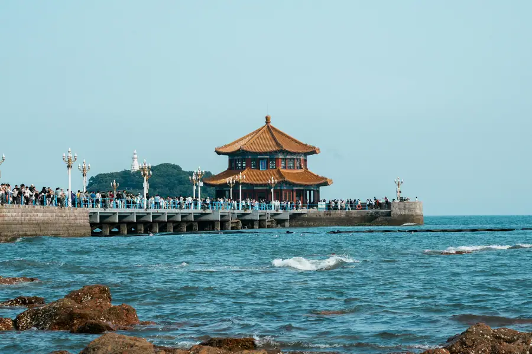
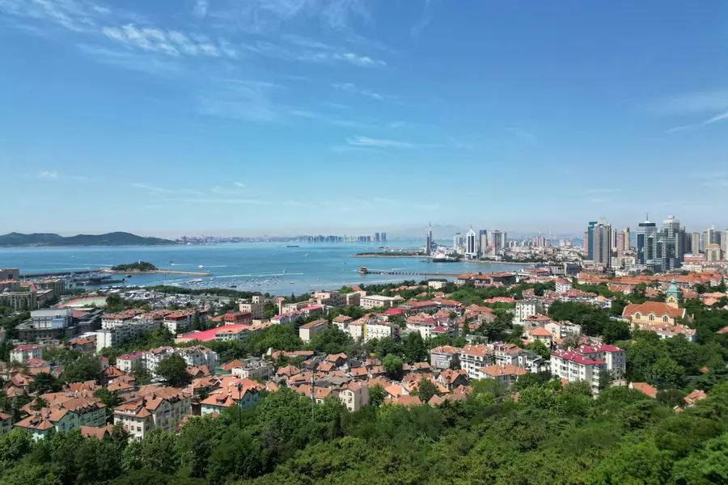
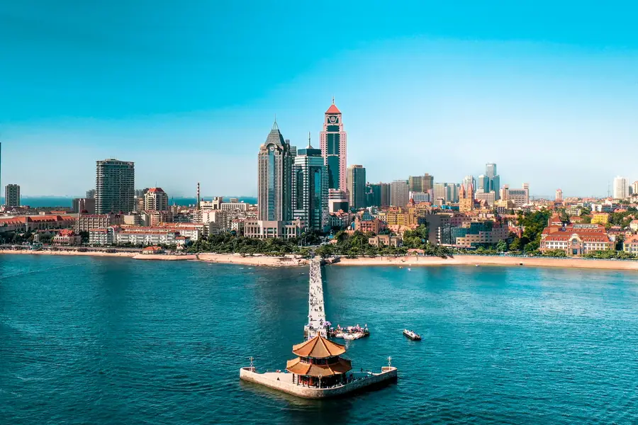

Qingdao Airport Transfer & Private Car
Qingdao Liuting (TAO) to downtown, the Badaguan villas, and the Tsingtao Brewery with licensed professional driver. A German-influenced port city on the Yellow Sea. Reliable Qingdao car service for every trip. Book a private car in Qingdao with just a few clicks. Pick-up and drop-off in Qingdao, door to door.
Qingdao in Pictures
Real scenes from Qingdao — landmarks, streets and everyday life.



Qingdao at a Glance
A breezy coastal city where German colonial architecture, golden beaches, and China's most famous beer come together. Reliable Qingdao car service for every trip. Book a private car in Qingdao with just a few clicks. Pick-up and drop-off in Qingdao, door to door.
Name Origin
The name Qingdao (青岛) means 'Green Island' and refers to the lush vegetation covering the small islands in the bay. The city became a German concession in 1898 and was later a major Japanese port during the first half of the 20th century, leaving behind a unique blend of European and Chinese architecture.
Education & Universities
Qingdao is home to Ocean University of China, one of the country's top marine science institutions. Qingdao University and China University of Petroleum (East China) are also well-regarded, making the city a strong education and research hub.
Metro & Transportation
Qingdao Metro has 7 lines covering the urban core and connecting the airport, railway stations, beaches, and commercial districts. The coastal roads and hilly terrain make a private car the most convenient way to visit scenic spots like Laoshan Mountain and the Badaguan area.
Natural Resources & Environment
Qingdao sits on the southern coast of the Shandong Peninsula, facing the Yellow Sea. The city is famous for its clean air, beaches, rocky coastline, and offshore islands. Mount Laoshan rises directly from the sea and is one of China's most sacred Taoist mountains.
🗺️ Maps & Transit
Plan your route before you arrive. Download the official metro maps and city maps below.
Top Qingdao Attractions
Discover Qingdao's most memorable sights with a private driver.
Badaguan Scenic Area
European Villas • Coastal Walk
A historic neighborhood of over 200 European-style villas built during the German and Japanese concessions. Each street is lined with a different tree species, making it one of Qingdao's most picturesque areas.
🛕 Tsingtao Brewery Museum
Beer History • Tasting
The original brewery founded by Germans in 1903, now a museum where visitors learn about beer production and enjoy fresh Tsingtao beer. A must-visit for beer lovers.
⛰️ Mount Laoshan
Taoist Mountain • Sea Views
One of China's most important Taoist mountains, rising directly from the Yellow Sea. The area offers hiking, temples, waterfalls, and spectacular coastal scenery.
🏝️ Zhanqiao Pier / Little Qingdao
Harbor Landmark • Pavilion
Qingdao's most famous landmark, a long pier extending into the bay with a traditional pavilion at the end. Nearby Little Qingdao Island is connected by a causeway.
🍵 St. Michael's Cathedral
German Gothic • City Center
A twin-spired Romanesque cathedral built by German missionaries in the early 1900s. It dominates the skyline of the old downtown area and remains an active church.
🏖️ Golden Beach Beer City
Beach • Beer Festival
A long sandy beach on the Huangdao side of the city, famous for hosting the annual Qingdao International Beer Festival. Lively atmosphere in summer.
Popular Qingdao Routes
Fixed-price private car service for Qingdao's most popular journeys.
TAO Liuting Airport → City Center
From ¥207 (≈ $29.15)~30 km · 40–60 min · Economy/Business/MPV
Qingdao Liuting Airport (TAO) is the main gateway to the city. Your driver meets you at arrivals, tracks your flight, and takes you directly to hotels in Shinan, Shibei, or Laoshan districts.
⛰️ Qingdao → Mount Laoshan
From ¥598 (≈ $84.23)~40 km · 1 hour · 8-hour day trip
Visit the sacred Taoist mountain with its temples, waterfalls, and coastal views. Your driver handles the mountain roads and waits while you explore the scenic area.
🏝️ Qingdao City Tour (Full Day)
From ¥598 (≈ $84.23)8 hours · Business vehicle · Custom itinerary
Cover Badaguan, Zhanqiao Pier, St. Michael's Cathedral, the Beer Museum, and a beach in one day. Your driver navigates the coastal hills and scenic roads.
🏝️ Qingdao → Jimo Ancient City
From ¥520 (≈ $73.24)~50 km · 1 hour · 6-hour day trip
Visit the historic walled city of Jimo with its ancient gates, traditional architecture, and local markets. A glimpse into old Shandong culture.
Transparent Pricing in Qingdao
Published rates, no estimate games. Check the numbers yourself before you book — and the price you see is the price your driver is paid from.
Fixed Price List — 青岛市 (Qingdao)
Published rates from our 2026 quote sheet. Renminbi first, USD for reference at 1 USD = ¥7.10. Every price below already includes tolls, parking, driver service and free airport waiting time (up to 60 minutes after your flight lands) — nothing is added on the day.
🛬 Airport & Intercity Transfer
One flat fare for airport pickup, drop-off or city-to-city — intercity costs the same as the airport run. 35 km and 60 minutes included; beyond that we charge by the minute and the kilometre at the rates shown.
| Vehicle | Seats | Bags | Fixed fare | USD | Beyond 35 km / 60 min |
|---|---|---|---|---|---|
| 4-seat Economy Sedan | 4 | 2 | ¥207 | ≈ $29.15 | ¥0.99/min · ¥4.53/km |
| 4-seat Comfort Sedan | 4 | 2 | ¥296 | ≈ $41.69 | ¥1.1/min · ¥5.01/km |
| 6-seat Business Van | 6 | 3 | ¥358 | ≈ $50.42 | ¥1.17/min · ¥5.33/km |
| 8-11-seat Business Van | 11 | 4 | ¥624 | ≈ $87.89 | ¥1.52/min · ¥6.93/km |
| 12-18-seat Minibus | 18 | 4 | ¥718 | ≈ $101.13 | ¥1.7/min · ¥7.73/km |
| 19-55-seat Coach Bus | 55 | 5 | ¥764 | ≈ $107.61 | ¥1.93/min · ¥8.79/km |
🚗 Hourly Private Charter
Book the car and the hours, keep the car for the day. Unused kilometres can be carried into the next tier, so a long day never turns into a penalty. The driver stays with you — you set the stops.
| Vehicle | 2h / 35km | 4h / 50km | 6h / 75km | 8h / 100km | 10h / 125km |
|---|---|---|---|---|---|
| 4-seat Private Car | ¥247 | ¥390 | ¥520 | ¥598 | ¥637 |
| 6-seat Business Van | ¥325 | ¥507 | ¥676 | ¥780 | ¥832 |
| 8-11-seat Business Van | ¥468 | ¥730 | ¥973 | ¥1123 | ¥1198 |
| 12-18-seat Minibus | ¥562 | ¥876 | ¥1168 | ¥1348 | ¥1438 |
| 19-55-seat Coach Bus | ¥674 | ¥1051 | ¥1402 | ¥1617 | ¥1725 |
Why travellers book Qingdao with Chinawheely
Six things you get with every booking — in Qingdao and across all 333 cities on the platform.
Licensed travel agency, not a ride-hail app
Chinawheely is a registered travel agency (L-HUB-101603). Your booking is a travel contract with a licensed operator — not a broker handing your number to whoever answers the phone.
One locked price, shown before you pay
The price you see is the price you pay. Tolls, parking, driver service and airport waiting time are already inside it. No surge pricing, no meter, no cash-on-the-day surprise.
Flight tracked, waiting time on us
We watch your flight number in real time. If it lands late or is delayed, your driver shifts with it and the waiting time stays on us — not on your bill.
A licensed driver who knows the city
Every car is driven by a professional local driver who knows the routes, the shortcuts and the parking that actually works near the attractions — with English communication and a name board on arrival.
Free changes up to 48 hours before
Plans move. Reschedule or cancel any booking free of charge up to 48 hours before your scheduled pickup, straight from your confirmation link.
A real human on WhatsApp, 8AM–12AM Beijing time
One message reaches a person who can re-price, re-route or re-plan your trip on the spot. No ticket queue, no chatbot loop.
Book Qingdao at the published price
Pick your vehicle, see the fare line by line, and pay by PayPal or Alipay. Free changes up to 48 hours before pickup — or ask on WhatsApp and we will hold a car for you.
The quote is valid for 48 hours, and you can change or cancel free up to 48 hours before pickup.
Getting to Qingdao: Airports & Railway Stations
Getting to Qingdao by air, rail, or road
✈️ Airports
🏝️ Qingdao Jiaodong International Airport (TAO)
Northwest of the city · 40 km to Shinan
TAO opened in 2021 as a major international and domestic hub replacing the old Liuting airport. It has a modern terminal designed around a starfish shape. The airport metro connects to the city center, but a private car takes 50–70 minutes to downtown hotels and is more comfortable with luggage.
🏯 Nearby Airports
Weifang, Yantai Penglai, Rizhao
Regional airports like Weifang Nanyin (WEF), Yantai Penglai (YNT), and Rizhao Shanzihe (RIZ) serve nearby cities. For most travelers, TAO is the only practical airport for Qingdao.
🚄 Railway Stations
🏝️ Qingdao Railway Station
Old city center · Near Zhanqiao
The historic main station in the German-built old town, serving high-speed trains to Jinan, Qingdao, and Shanghai. Its red-roofed architecture is iconic. Metro line 1 and 3 connect here.
🏝️ Qingdao North Railway Station
Main HSR hub · Northern district
A large modern high-speed rail station serving long-distance trains to Qingdao, Shanghai, and Tianjin. Convenient for northern Qingdao hotels and well connected by metro.
🏝️ Qingdao West Railway Station
Huangdao district · West coast
Serves high-speed trains on the Qingdao-Jinan and coastal routes. Convenient for travelers staying in the Huangdao West Coast New Area.
🗼 Jimo North Railway Station
Suburban HSR · Jimo district
A smaller high-speed station serving the Jimo area north of the city. Useful for day trips to Jimo Ancient City.
⛰️ Laoshan Railway Station
Laoshan district · Mountain area
Serves conventional trains on the Qingdao-Jinan line. Convenient for travelers heading directly to Laoshan scenic area.
🗼 Need a Station Pickup?
We meet you at the exit with a name board and help with luggage.
Book Station TransferQingdao's Best Photo Spots
Capture Qingdao from the most photogenic angles.
🏖️ Badaguan Tree-Lined Streets
Best in spring or autumn
The European villas and tree-lined avenues of Badaguan are perfect for atmospheric walks. Each street has a different tree species, creating varied colors through the seasons.
🌊 Zhanqiao Pier at Sunset
Best at sunset
The iconic pavilion at the end of Zhanqiao Pier is best photographed at sunset when the sky turns pink and orange over the bay.
⛰️ Mount Laoshan Coastline
Best on clear mornings
The view of Mount Laoshan rising from the sea is one of the most dramatic coastal scenes in eastern China. Clear skies after rain give the best visibility.
🍺 Tsingtao Brewery Red Brick
Best in afternoon light
The red-brick German brewery buildings make a photogenic backdrop. The contrast of old industrial architecture with modern beer culture is visually striking.
🏖️ Golden Beach Sunrise
Best at sunrise
The long sandy beach on the west coast is beautiful at sunrise, with soft light and fewer visitors. The summer Beer Festival brings crowds and lights.
⛪ St. Michael's Cathedral Square
Best in early morning
The twin spires of the cathedral framed by cobblestone streets and old German buildings make a classic European-Chinese scene. Go early to avoid crowds.
Food & Shopping in Qingdao
🍽️ Must-Try Qingdao Cuisine
Qingdao Beer & Seafood
Qingdao's identity is tied to beer and fresh seafood. Locals drink Tsingtao beer with grilled clams, oysters, squid, and shrimp at beachside restaurants. The combination is a defining local experience.
Seafood Dumplings (Haixian Jiaozi)
Dumplings stuffed with fresh shrimp, scallops, or mackerel. The thin skins and sweet seafood filling make them a local favorite. Available at seafood restaurants and dumpling shops throughout the city.
Shandong Pancake (Jianbing)
A crispy savory pancake folded around egg, scallions, cilantro, and crunchy crackers. It's a popular breakfast street food across Shandong, with Qingdao vendors adding local seafood twists.
Laoshan Green Tea Dishes
Laoshan green tea is famous throughout northern China. Local restaurants incorporate tea leaves into dishes, desserts, and drinks, adding a fresh, slightly bitter aroma to the cuisine.
🛍️ Shopping Destinations
Taidong Pedestrian Street
One of Qingdao's busiest shopping areas, with department stores, local brands, restaurants, and the famous painted wall murals. A good place for souvenirs and street food.
Zhongshan Road
The historic commercial street near the old German district, lined with colonial-era buildings, shops, and restaurants. It connects the railway station to the waterfront.
Jimo Road Small Commodity Market
A large local market for clothing, accessories, household goods, and budget souvenirs. It's a lively place to experience everyday Qingdao shopping culture.
Hisense Plaza
A high-end shopping mall in the eastern business district with international luxury brands, boutiques, and dining. Convenient for upscale shopping near the coastal area.
🎁 What to Buy in Qingdao
Tsingtao Beer Souvenirs
Miniature bottles, branded glassware, T-shirts, and beer snacks from the Tsingtao Brewery Museum. A fun and authentic edible souvenir for beer fans.
Laoshan Green Tea
One of northern China's best green teas, grown in the misty mountains of Laoshan. Buy from specialty tea shops or directly at the mountain for the freshest leaves.
Seafood Dried Goods
Dried squid, shrimp, seaweed, and fish are Qingdao specialties. Available at seafood markets and souvenir shops. Choose vacuum-packed products for travel.
German-Style Bread & Sausage
Qingdao's German colonial heritage lives on in local bakeries and delis selling rye bread, pretzels, and cured sausages. Available near the old German quarter.
Intangible Cultural Heritage & Living Crafts of Qingdao
Meet the traditional arts that have shaped Qingdao's identity for centuries.
🎭 Laoshan Taoist Music
A traditional form of religious music performed in Taoist rituals at Laoshan's temples. It combines chanting, percussion, and wind instruments to create a meditative atmosphere.
Where to find it: Laoshan scenic area temples, especially during Taoist festivals and ceremonies.
⛰️ 🧵 Laoshan Tea Processing
The traditional method of growing and processing Laoshan green tea has been passed down for generations. The cool mountain climate and sea mist create a unique tea flavor.
Where to find it: Laoshan tea plantations and specialty tea shops in the city.
⛰️ 🎨 Shandong Fast-Paper Cutting (Jianzhi)
A folk art practiced across Shandong, with intricate designs featuring fish, flowers, and auspicious symbols. Qingdao artists add coastal themes like ships and seagulls.
Where to find it: Folk art shops on Zhongshan Road and cultural markets near the old town.
🛕 🥟 Qingdao Seafood Dumpling Craft
The art of making delicate dumpling wrappers and perfectly seasoned seafood fillings is a living tradition in Qingdao. Master dumpling makers can fold dozens in minutes.
Where to find it: Traditional seafood restaurants in Badaguan, Taidong, and Shinan districts.
🎭 Jimo Parchment Shadow Puppetry
An ancient performance art using leather puppets and backlit screens to tell stories from history and folklore. It is especially popular in rural areas around Jimo.
Where to find it: Cultural festivals in Jimo and Qingdao folk art exhibitions.
🏝️ 🏮 Qingdao Paper Kite Making
Traditional kite making with bamboo frames and hand-painted designs featuring marine life, birds, and legends. The coastal winds make Qingdao ideal for kite flying.
Where to find it: Spring kite festivals at Golden Beach and local craft markets.
Qingdao Local Secrets
Insider tips to help you experience Qingdao like a local.
Drink Beer from the Bag
Locals often buy fresh Tsingtao beer poured into plastic bags from corner shops. It's a uniquely Qingdao experience. Don't worry — restaurants will happily pour it into a glass for you.
🏖️ Avoid Golden Beach on July Weekends
Qingdao's beaches are packed in July and August. Visit in early June or September for warm water, fewer crowds, and lower hotel prices.
Eat Seafood Away from the Pier
The restaurants right at Zhanqiao Pier are touristy and overpriced. Walk a few blocks inland or head to Taidong for fresher, cheaper seafood.
Visit Badaguan Early
Badaguan's villas are best explored in the early morning when the streets are quiet and the light is soft. It's a perfect walk before the crowds arrive.
Book a Car for Laoshan
Laoshan is large and spread out, with multiple scenic entrances. A private car lets you visit the best viewpoints in one day without relying on crowded buses.
Time Your Visit for the Beer Festival
The Qingdao International Beer Festival in August is one of Asia's biggest. Book hotels and drivers far in advance if you plan to visit during this time.
Day Trips from Qingdao
Explore beyond Qingdao with these rewarding day trips.
Mount Laoshan
From ¥598 (≈ $84.23)~40 km · 1 hour · 8-hour day trip
Explore the sacred Taoist mountain with sea views, ancient temples, and tea plantations. A must-see natural and cultural destination near Qingdao.
Jimo Ancient City
From ¥520 (≈ $73.24)~50 km · 1 hour · 6-hour day trip
A historic walled city with traditional gates, ancient streets, and local markets. Offers a glimpse into Shandong's past.
Weihai
From ¥598 (≈ $84.23)~250 km · 3 hours · 12-hour day trip
A scenic coastal city with the Liugong Island naval museum, clean beaches, and fresh seafood. The drive along the Shandong coast is beautiful.
Penglai / Yantai
From ¥598 (≈ $84.23)~220 km · 3 hours · 12-hour day trip
Visit the legendary Penglai Pavilion, said to be one of the homes of the Taoist immortals, and continue to Yantai for wine tasting and coastal scenery.
Best season to travel in Qingdao
Plan your trip around Qingdao's seasons for the best experience.
Spring (Apr–May)
12–20°C · Mild & Blooming
The best time to visit Qingdao. Cherry blossoms, mild temperatures, and clear skies. The city is green and the beaches are quiet before the summer crowds.
Summer (Jun–Aug)
22–28°C · Warm & Humid
Beach season and the famous Beer Festival in August. The city is lively but crowded. Book hotels and drivers in advance. Great for seafood and swimming.
Autumn (Sep–Oct)
15–24°C · Cool & Clear
Pleasant temperatures, fewer crowds, and excellent visibility for coastal views. Another great season for exploring the city and Laoshan.
Winter (Nov–Mar)
-2–8°C · Cold & Windy
Cold and windy by the sea, but hotels are cheap. Indoor attractions like the Beer Museum and seafood restaurants are cozy. Some beachside businesses close.
Best Time to Visit qingdao
qingdao runs from -0.2 °C in January to 25.7 °C in August, an annual average of 13.0 °C and about 662 mm of rain across the year. The chart and the four seasons below are built from the city’s own climate record.
August is the warmest month at 25.7 °C and January the coldest at -0.2 °C, a spread of 25.9 °C. Rain is heaviest in August, which averages 151 mm, and lightest in January at 11 mm. Summer is the wettest stretch of the year at about 377 mm in total, while Winter is the driest at 35 mm.
For most travellers the winter window is the one to plan around: it carries only about 35 mm of rain across the whole season, against roughly 377 mm in summer. The 25.9 °C gap between the extremes also means the shoulder months either side of summer sit in a comfortable band, with many days in the high teens or low twenties.
Private transfers are booked by pickup time rather than by season, so the weather only changes what you do with the hours you have. In January a driver waiting at the terminal matters, because the afternoon average sits around -0.2 °C; by August the same day averages 25.7 °C and the car is most of the day’s comfort.
Spring
March, April, May · avg 11.3 °C · 111 mm rain
March averages 5.7 °C and May 16.8 °C, so the season warms fast.
Summer
June, July, August · avg 23.7 °C · 377 mm rain
August peaks at 25.7 °C, the warmest point of the whole year.
Autumn
September, October, November · avg 15.9 °C · 139 mm rain
September averages 22.1 °C and November 9.1 °C.
Winter
December, January, February · avg 1.2 °C · 35 mm rain
January bottoms out at -0.2 °C, the coldest point of the whole year.
Useful Chinese Phrases for Qingdao
A few key phrases to help you navigate Qingdao.
你好 (Nǐ hǎo)
Hello / Hi
Basic greeting for meeting your driver and entering shops.
谢谢 (Xièxiè)
Thank you
Use after receiving help or service.
一杯青岛啤酒 (Yì bēi Qīngdǎo píjiǔ)
A glass of Qingdao beer
Essential phrase at restaurants and the Beer Festival.
这个多少钱？ (Zhège duōshao qián?)
How much is this?
Useful for shopping at markets and souvenir shops.
我要去栈桥 (Wǒ yào qù Zhàn Qiáo)
I want to go to Zhanqiao Pier
Tell your driver your destination. Replace with any attraction.
厕所在哪里？ (Cèsuǒ zài nǎlǐ?)
Where is the bathroom?
Useful at beaches, markets, and tourist sites.
Book Your Qingdao Airport Transfer
Fixed price, licensed professional driver, free flight tracking. From TAO to any Qingdao hotel.
Get Instant QuoteQuestions? WhatsApp +86-155-2777-1775
Travel Essentials for Your Qingdao Trip
Make your Qingdao journey smoother with these essential services.
Mobile Pocket Wi-Fi
Stay connected anywhere in China with a pocket Wi-Fi device. Pick up at TAO or have it delivered to your hotel.
Book Wi-Fi at ChinaWiFiGoEnglish-Speaking Guide
Explore Qingdao's history with a professional English-speaking guide. Custom tours and skip-the-line access.
Book Guide at VIPChinaGuideMedical Services
Add a health checkup, dental cleaning, or TCM treatment to your trip. World-class care at a fraction of Western prices.
Book Medical at MediEscortChinaPopular Qingdao Airport Transfer Routes
🚗 Qingdao Airport Transfer Airport Transfer to Laoshan Mountain
Book Qingdao Airport Transfer To Laoshan private car service with licensed driver. Fixed price airport transfers and city tours. No hidden fees.
View Route & Book →Best season to travel in Qingdao
🌸 Best Season April – June / September – October — Spring (April–June) brings comfortable temperatures and the famous cherry blossom avenue on Yan'an Road. Autumn (September–October) offers warm seas and the Tsingtao Brewery at its most atmospheric.
The best season. Cherry blossoms line Yan'an Road in April, Badaguan's European villas are at their most beautiful, and the Zhanqiao Pier is perfect for sunset walks.
Warm and humid with the best beach weather of the year. Zhoushan Beach is at its most popular. Summer is peak tourist season.
The finest season for sightseeing and culture. Warm seas for swimming in September, comfortable temperatures in October, and the Tsingtao Brewery at its most atmospheric.
Cold and windy with occasional snow. The Zhanqiao Pier has a stark, beautiful isolation. Indoor attractions like the Tsingtao Brewery tour are warm and uncrowded.
🧧 Chinese New Year 2027 in Qingdao
Chinese New Year 2027 falls on January 29, 2027 -- the start of the Year of the Snake on the Chinese lunar calendar. Qingdao with its German colonial heritage and coastal setting has uniquely European-influenced Spring Festival traditions. Keywords: when is chinese new year 2027, chinese new year 2027.
Chinese Spring Festival Facts
When is Chinese New Year 2027? January 29, 2027
Chinese New Year 2027 is January 29, 2027. Qingdao with its German colonial heritage has a uniquely cosmopolitan Spring Festival atmosphere -- European architecture lit with Chinese red lanterns, and the famous Tsingtao beer flowing.
Badaguan European District Decorations
The Badaguan (八大关) scenic area with its German, British, and Russian colonial architecture is beautifully decorated with red lanterns during Spring Festival -- a unique Sino-European atmosphere.
Chinese Spring Festival Food -- Tsingtao Beer and Seafood
Qingdao is famous for Tsingtao beer -- brewed here since 1903. During Spring Festival, fresh Tsingtao beer is served alongside grilled seafood -- Qingdao is a coastal city with exceptional fresh seafood.
Top Spring Festival Activities
Zhanqiao Pier Illuminated at Night
Qingdaos iconic seafront pier (栈桥) is beautifully lit during Spring Festival -- walk to the end for panoramic views of the Yellow Sea. One of Qingdaos most romantic night views. Free.
Badaguan European District Lantern Walk
The Badaguan (八大关) European colonial area is decorated with red lanterns and traditional Chinese decorations -- a unique Sino-European atmosphere. Free.
Tsingtao Brewery Spring Festival Tasting
The Tsingtao Brewery (青岛啤酒厂) offers special Spring Festival tasting sessions -- sample the full range of Tsingtao beers at the source. Brewery tours available.
Must-Try Spring Festival Food
Tsingtao Beer -- Fresh from the Source
Qingdao is the birthplace of Tsingtao beer. Fresh, unpasteurised Tsingtao is available directly from the brewery. During Spring Festival, it is served alongside grilled seafood at the brewery tap rooms.
Tip: Best at: Tsingtao Brewery Tap Room (青啤二厂)
Grilled Seafood -- Qingdao Style
Qingdao is a coastal city with exceptional fresh seafood -- grilled squid, prawns, and fish are popular street foods during Spring Festival. Served with Tsingtao beer.
Tip: Try at: Zhanshan (栈山) or Lao Shan (崂山) seafood stalls
Qingdao Jiaozi
Qingdao jiaozi are typically seafood-based -- shrimp, squid, and crab meat fillings are common. Reflecting the coastal citys marine bounty.
Tip: Available at wet markets from mid-January
Traditional Customs
European-Chinese Architecture Walks
Qingdao families walk through the Badaguan (八大关) European colonial area on the first evening of the new year -- combining European architecture with Chinese lantern decorations.
Beer for the New Year
Tsingtao beer is an essential part of Qingdao Spring Festival -- fresh from the brewery tap. Families share Tsingtao beer as they would wine at the reunion dinner.
Visa & Entry Information for Qingdao
Plan your China trip with confidence -- everything you need to know about visas, border crossings, and getting to Qingdao.
China Visa Guide
Complete guide to tourist visas, business visas, application process, and 144-hour transit visa-free access at major Chinese cities.
Embassies & Consulates
Find Chinese embassies and consulates worldwide -- including USA, UK, Canada, Australia, Germany, France, Japan, South Korea and more.
Entry & Travel Guide
From airport immigration to paying with your phone -- everything you need to know before and after arriving in China.
Chat on WhatsApp

Scan the QR code with WhatsApp to add us and start chatting.
Or add us directly: +86-155-2777-1775
Open WhatsApp Chat🏆 Major Sports Events in Qingdao
Qingdao is northern China's coastal sports paradise -- home to the Qingdao Marathon (Gold Label), Olympic sailing venues from the 2008 Games, and the Qingdao Eagles CBA team.
Qingdao Marathon (青岛马拉松)
2026: May (annual, World Athletics Gold Label)
The Qingdao Marathon (青岛马拉松) is a World Athletics Gold Label event. Course passes the Badaguan (八大关) European architecture district, the coastline, and the Olympic Sailing Centre. 30,000 runners. One of China's most scenic marathons.
Venue: Start: Badaguan (八大关); Finish: Olympic Sailing Centre. Metro: May Fourth Square (Line 3).
Chinese Super League Football (中超联赛 – 青岛海牛)
2026 season: March to November
Qingdao Hainiu (青岛海牛) competes in the CSL at the Qingdao Youth Football Stadium (青岛青春足球场). The club's return to the top flight in 2023 was celebrated across the city.
Venue: Qingdao Youth Football Stadium (青岛青春足球场), Chengyang District. Metro: Yingkou Road (Line 3).
Qingdao Eagles CBA Basketball (青岛国信)
2026-2027 season: October 2026 to May 2027
The Qingdao Eagles (青岛国信) play at the Qingdao Guoxin Sports Centre. Known for strong youth development and competitive CBA performances in the 2026-2027 season.
Venue: Qingdao Guoxin Sports Centre (青岛国信体育中心). Metro: Ciudad Expo (Line 11).
Qingdao International Sailing Week (青岛国际帆船周)
2026: August to September (annual)
Qingdao's Olympic sailing legacy continues with the annual International Sailing Week (青岛国际帆船周) at the Olympic Sailing Centre. Amateur and professional sailing races, boat shows, and coastal activities. Free spectator access.
Venue: Qingdao Olympic Sailing Centre (青岛奥帆中心), Shinan District. Metro: May Fourth Square (Line 3).
🎭 Concerts & Performances in Qingdao
Qingdao has a vibrant year-round performing arts scene from world-class symphony orchestras and international pop concerts to traditional cultural shows and annual arts festivals. Here is your guide to the best live performances in Qingdao.
🎵 Music & Arts Festivals
Qingdao International Beer Festival Opening Concert
The opening weekend of Qingdao International Beer Festival features major Chinese pop concerts and international music acts. Asia largest beer festival with daily performances throughout.
Venue: Qingdao International Beer City (Pijiu Cheng)
Season: July-August annually (mid-July to mid-August)
Qingdao premier rock and indie music festival on the beach. Chinese rock legends, indie bands, and underground acts perform against the backdrop of the Yellow Sea.
Venue: Shilaoren Beach / Laoshan District venues
Season: June annually
🎻 Classical Music & Symphony
Qingdao Grand Theatre Classical Season
Qingdao premier performing arts venue. Hosts Qingdao Symphony Orchestra, international ballet companies, opera productions, and drama. Annual New Year Concert is a city highlight.
Venue: Qingdao Grand Theatre
Season: Year-round (Sep-Jun classical)
🌙 Free Nightly Performances
Maritime performances at the 2008 Olympic sailing venue. Evening light shows, water screen projections, and musical performances over the sea. Romantic setting with city skyline backdrop.
Venue: Qingdao Olympic Sailing Centre (Aofan Zhongxin)
Season: Year-round (outdoor Apr-Oct)
🎭 Traditional Cultural Performances
Tsingtao Brewery Heritage Concert Series
Cultural performances at the historic Tsingtao Brewery heritage venue. Traditional Shandong music, folk performances, and contemporary concerts in a unique historical setting.
Venue: Tsingtao Brewery Museum Heritage Venue
Season: Year-round (regular)
Attend a Qingdao Concert with a Private Car
Avoid metro crowds after the show. Our licensed professional driver will drop you at the door and pick you up after. Available for all venues in Qingdao.
Book Concert Transfer⛵ Major Sports Events in Qingdao
Qingdao hosts an impressive calendar of major sports events throughout the year. From professional football and basketball to international marathons and winter sports, here is your complete guide to sports in Qingdao for 2026 and 2027.
⛵ Sailing & Water Sports
ISAF Sailing World Cup / World Sailing Championships - Qingdao
Season: July-October annually Year: 2026
Qingdao hosted 2008 Olympic sailing events and continues hosting major international sailing competitions. Annual ISAF events feature Olympic classes and top sailors worldwide.
Venue: Qingdao Olympic Sailing Centre (Aofan Zhongxin)
🏃 Marathons & Running
Qingdao International Marathon
Season: November annually (2026 TBC) Year: 2026
One of China most scenic urban marathons from Zhanqiao Pier along coastline past Badaguan architecture to Laoshan Mountain. 2026 expected in November.
Venue: Zhanqiao Pier to Laoshan Mountain
Qingdao International Beer Marathon
Season: July-August (Beer Festival) Year: 2026
Unique marathon held during Qingdao International Beer Festival. Runners receive complimentary Tsingtao beer at aid stations celebrating Qingdao brewing heritage.
Venue: Tsingtao Brewery to Qingdao Beachfront
⚽ Football & Soccer
Chinese Super League (CSL) - Qingdao Clubs Home Matches
Season: March-November 2026 Year: 2026
Qingdao has multiple clubs in Chinese football league system. Qingdao West Coast and Qingdao Hainiu compete at various levels with passionate local support. 2026 season: March-November.
Venue: Qingdao Youth Football Stadium / Qingdao Olympic Sports Centre
🎾 Tennis
Qingdao Open (ATP Challenger Tennis)
Season: July-August annually Year: 2026
ATP Challenger tournament featuring up-and-coming professional players and some established players competing for ranking points.
Venue: Qingdao Tennis Centre
Get to Qingdao Sports Events with a Private Car
Avoid metro crowds on match day. Our licensed professional driver takes you door to venue and back. Available for all stadiums, arenas, and courses in Qingdao.
Book Sports TransferTea Culture & Teahouse Guide in Qingdao
Qingdao has the strongest claim to a local named tea of any city that kept a tea-culture page: the green tea that grows on the slopes of Laoshan, the mountain that rises directly behind the old German concession quarter.
Laoshan stands in Qingdao and is described as a mountain where subtropical plants such as tea and bamboo can be cultivated, and the green tea taken from those slopes takes the mountain's name. It is grown from the same ridges that carry the Taoist temples, with nine palaces, eight observatories and seventy-two hermitages spread across the massif, and the mountain's streams feed the reservoir that supplies the city's drinking water.
That reservoir, the Yuezikou Reservoir known as the Laoshan Reservoir, holds around 56 million cubic metres and is one of Qingdao's important freshwater sources, which is a neat piece of geography: the mountain that grows the tea also stores the water the city drinks. German commercial activity in the Jiaozhou concession from the 1920s left the city with a European quarter of beer halls and villas that sits a few kilometres from the tea slopes.
Qingdao's own refreshment culture leans on beer rather than tea. The Tsingtao Brewery opened in 1903 and turned the city's drinking habits inside out, and the German concession quarter still trades on that. Tea sits alongside it rather than replacing it, which is why a green tea from Laoshan is usually the thing a visitor is taken to taste.
The Laoshan Reservoir (Yuezikou Reservoir) capacity, and one of Qingdao's main freshwater sources.
Nine Taoist palaces, eight observatories and seventy-two hermitages across the mountain where the tea grows.
The year the Tsingtao Brewery opened, which is the reason the city's drinking culture points at beer rather than tea.
A driver on the Laoshan road is worth having: the switchbacks take longer than the map suggests, and the best picking is on the north face rather than at the foot of the mountain.
More Qingdao Guides & Transfers
Airport transfers, day trips and practical guides for Qingdao — pick the one that matches your itinerary, then book the car in a minute.
Qingdao Airport Transfer to Laoshan Mountain
Book Qingdao Airport Transfer To Laoshan private car service with licensed driver
Best Time to VisitQingdao Best Time to Visit
Book Qingdao Best Time private car service with licensed driver
Day TripsQingdao Day Trips & Excursions
Book Qingdao Day Trips private car service with licensed driver
Food & ShoppingQingdao Food & Shopping Guide
Book Qingdao Food Shopping private car service with licensed driver
Photo SpotsQingdao Best Photo Spots & Photography Locations
Book Qingdao Photo Spots private car service with licensed driver
Tea CultureQingdao Tea Culture & Tea House Guide
Book Qingdao Tea Culture private car service with licensed driver
More China destinations
Compare routes, published prices and local driver tips across the cities we cover.